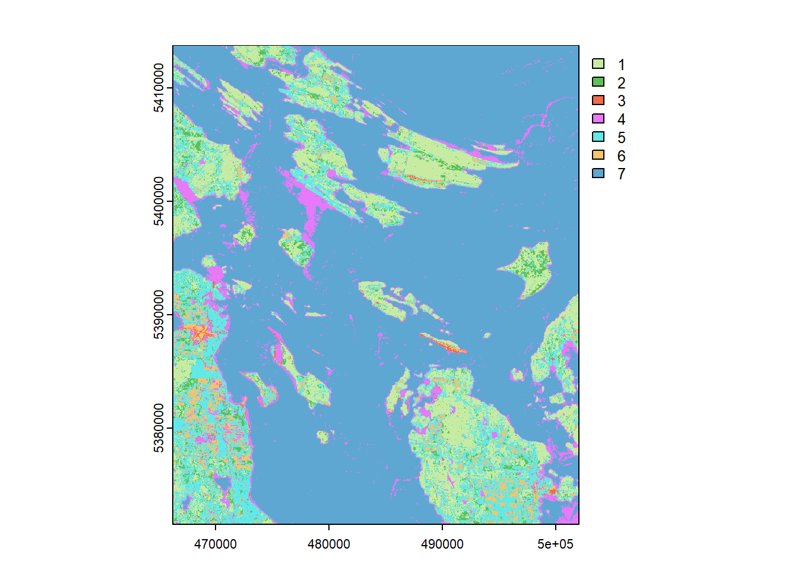

# Required Libraries
library(tidyverse) # For data manipulation and visualization
library(terra) # For handling raster data and geospatial operations
library(sf) # For handling vector data (shapefiles)
library(RStoolbox) # For supervised classification and accuracy assessmentSupervised Image Classification
1. Introduction
This report presents the process of performing supervised classification on Landsat imagery using R. The objective was to classify the image into various land cover classes based on training data, followed by an accuracy assessment using a confusion matrix. The analysis also included visualizing spectral signatures for different land cover types.
Learning Objectives:
- Supervised classification of remote sensing data using R
- Data cleaning, training, and applying a classifier
- Evaluating classification accuracy with a confusion matrix
- Visualizing spectral signatures
2. Dataset Description
The Landsat dataset used for this analysis covered a portion of urban and forested areas. The key attributes of the dataset included:
- Spectral bands (e.g., Red, Green, Blue, Near-Infrared)
- Land cover classes (e.g., Urban, Forest, Water, etc.)
3. Required Software and Libraries
The analysis used the following libraries for processing and classification:
These libraries were used to load, process, and analyze the Landsat imagery and shapefiles containing the training polygons.
4. Methodology
4.1 Load Landsat Imagery
The first step was to load the Landsat image. The image was in TIFF format containing multiple spectral bands (Red, Green, Blue, Near-Infrared, etc.).
# Load the Landsat imagery into R
ls_image <- rast("data/LC09_L2SP_047026_20240716_20240717_02_T1_SR_BSTACK.tif")
# Display the Landsat image
ls_imageclass : SpatRaster
dimensions : 1407, 1194, 6 (nrow, ncol, nlyr)
resolution : 30, 30 (x, y)
extent : 466215, 502035, 5371545, 5413755 (xmin, xmax, ymin, ymax)
coord. ref. : WGS 84 / UTM zone 10N (EPSG:32610)
source : LC09_L2SP_047026_20240716_20240717_02_T1_SR_BSTACK.tif
names : blue, green, red, nir, swir1, swir2
min values : 0, 0, 0, 0, 0, 0
max values : 1, 1, 1, 1, 1, 1 The next step was to create an RGB composite of the image using three bands (Red, Green, Blue) for easier visual interpretation of the land cover types.
# Plot the RGB composite of the Landsat image (bands 3, 2, 1 corresponding to RGB)
terra::plotRGB(ls_image, r = 3, g = 2, b = 1, stretch = "lin")4.2 Load and Prepare Training Polygons
The training polygons, which represent known land cover classes, were loaded from a shapefile. These polygons were used to train the supervised classifier as they ensure that the classification is based on real examples of the classes.
# Load the classification polygons shapefile
my_polygons <- "outputs/shapefiles/classification_polygons_DM.shp"
class_poly <- st_read(my_polygons)Reading layer `classification_polygons_DM' from data source
`C:\Users\mdaisy1.stu\OneDrive\Documents\GitHub\Daisy Mboya-Personal Portfolio\Remote Sensing\Supervised Image Classification\outputs\shapefiles\classification_polygons_DM.shp'
using driver `ESRI Shapefile'
Simple feature collection with 128 features and 1 field
Geometry type: POLYGON
Dimension: XY
Bounding box: xmin: 466225.9 ymin: 5371563 xmax: 501240.2 ymax: 5413727
Projected CRS: WGS 84 / UTM zone 10N# Ensure the geometries in the shapefile are valid
class_poly <- st_make_valid(class_poly)
# Convert the land cover class to a factor with specified levels
class_poly <- class_poly %>%
mutate(lc_class = factor(lc_class,
levels = c("Broadleaf Forest",
"Coniferous Forest",
"Exposed soil and rocks",
"High density developed",
"Low density developed",
"Non-forest vegetation",
"Water")))
# Plot the polygons over the Landsat image
terra::plotRGB(ls_image, r = 3, g = 2, b = 1, stretch = "lin")
plot(class_poly[, "lc_class"], add = TRUE)Here is a summary of the number of polygons per class
poly_summary <- class_poly %>%
st_drop_geometry() %>%
group_by(lc_class) %>%
summarize(n_poly = n())
poly_summary# A tibble: 7 × 2
lc_class n_poly
<fct> <int>
1 Broadleaf Forest 22
2 Coniferous Forest 15
3 Exposed soil and rocks 10
4 High density developed 9
5 Low density developed 15
6 Non-forest vegetation 26
7 Water 314.3 Split Data into Training and Validation Sets
The training polygons were split into two sets: 70% for training and 30% for validation. This allows us to train the classifier on one subset of the data and test its performance on another.
# Assign a unique ID to each polygon for easier identification
class_poly <- tibble::rowid_to_column(class_poly, var = "ID")
set.seed(1234)
# Sample 70% of the polygons for training
poly_train <- class_poly %>%
group_by(lc_class) %>%
sample_frac(0.7) %>%
mutate(set = "training") %>%
st_cast(to = 'POLYGON')
# The remaining 30% are used for validation
poly_val <- class_poly %>%
filter(!ID %in% poly_train$ID) %>%
mutate(set = "validation") %>%
st_cast(to = 'POLYGON')
# Combine the training and validation sets
poly_set <- rbind(poly_train,
poly_val)
# Display the number of polygons in each set
table(poly_set$set)
training validation
88 40 4.4 Extract Training Data for Classification
Once the training polygons were split, the corresponding pixel values from the Landsat image were extracted for each class in the training and validation sets, to allow the classifier to learn the spectral characteristics of each land cover class.
poly_set_vals <- terra::extract(ls_image, vect(poly_set))
# We need to perform an inner_join to retrieve lc_class
poly_set_vals <- inner_join(poly_set, poly_set_vals) %>%
st_drop_geometry()
# Calculate the number of pixels per land cover class
poly_stats <- poly_set_vals %>%
group_by(set, lc_class) %>%
summarize(n_px = n())
# Display the class statistics
poly_stats # A tibble: 14 × 3
# Groups: set [2]
set lc_class n_px
<chr> <fct> <int>
1 training Broadleaf Forest 14146
2 training Coniferous Forest 420
3 training Exposed soil and rocks 4631
4 training High density developed 559
5 training Low density developed 794
6 training Non-forest vegetation 28348
7 training Water 1032
8 validation Broadleaf Forest 3455
9 validation Coniferous Forest 93
10 validation Exposed soil and rocks 1915
11 validation High density developed 395
12 validation Low density developed 3593
13 validation Non-forest vegetation 6010
14 validation Water 234# Calculate the number of pixels per land cover class
poly_stats <- poly_set_vals %>%
group_by(set, lc_class) %>%
summarize(n_px = n())
# Display the class statistics
poly_stats # A tibble: 14 × 3
# Groups: set [2]
set lc_class n_px
<chr> <fct> <int>
1 training Broadleaf Forest 14146
2 training Coniferous Forest 420
3 training Exposed soil and rocks 4631
4 training High density developed 559
5 training Low density developed 794
6 training Non-forest vegetation 28348
7 training Water 1032
8 validation Broadleaf Forest 3455
9 validation Coniferous Forest 93
10 validation Exposed soil and rocks 1915
11 validation High density developed 395
12 validation Low density developed 3593
13 validation Non-forest vegetation 6010
14 validation Water 234For ease of analysis, the dataset was reshaped from a wide format (where each band is a separate column) to a long format (where each band is a row with the corresponding reflectance value).
# Reshape the data from wide to long format
poly_set_vals_long <- pivot_longer(poly_set_vals, blue:swir2,
names_to = "band", values_to = "reflectance")
# Display the reshaped data
head(poly_set_vals_long) # A tibble: 6 × 5
# Groups: lc_class [1]
ID lc_class set band reflectance
<dbl> <fct> <chr> <chr> <dbl>
1 105 Broadleaf Forest training blue 0.0467
2 105 Broadleaf Forest training green 0.0798
3 105 Broadleaf Forest training red 0.0812
4 105 Broadleaf Forest training nir 0.124
5 105 Broadleaf Forest training swir1 0.136
6 105 Broadleaf Forest training swir2 0.119 The mean, 5th quantile, and 95th quantile of reflectance for each band and land cover class was then calculated to summarize and analyze the spectral characteristics of the different land cover types.
# Calculate spectral signatures for each land cover class and band
spectral_sign <- poly_set_vals_long %>%
group_by(lc_class, band) %>%
summarize(r_mean = mean(reflectance, na.rm = TRUE),
r_q05 = quantile(reflectance, 0.05, na.rm = TRUE),
r_q95 = quantile(reflectance, 0.95, na.rm = TRUE))
# Display the spectral signatures
spectral_sign # A tibble: 42 × 5
# Groups: lc_class [7]
lc_class band r_mean r_q05 r_q95
<fct> <chr> <dbl> <dbl> <dbl>
1 Broadleaf Forest blue 0.0117 0.00279 0.0498
2 Broadleaf Forest green 0.0169 0.00718 0.0805
3 Broadleaf Forest nir 0.0228 0 0.225
4 Broadleaf Forest red 0.0109 0 0.0883
5 Broadleaf Forest swir1 0.0239 0 0.181
6 Broadleaf Forest swir2 0.0177 0.000282 0.130
7 Coniferous Forest blue 0.0276 0.0114 0.0559
8 Coniferous Forest green 0.0486 0.0273 0.0821
9 Coniferous Forest nir 0.242 0.141 0.387
10 Coniferous Forest red 0.0421 0.0147 0.0893
# ℹ 32 more rows4.5 Visualize Spectral Signatures
Spectral signatures were generated by plotting the reflectance values of each band for each land cover class. This helped to visualize the differences in spectral characteristics between classes.
# Wavelength corresponding to each band
bands_wavelength <- read_csv("data/bands_wavelength.csv")
# Join the wavelength data with the spectral signatures
spectral_sign <- inner_join(spectral_sign, bands_wavelength)
# Create the spectral signature plot
ggplot(spectral_sign, aes(x = wavelength, y = r_mean, group = 1)) +
geom_point() +
geom_line() +
geom_ribbon(aes(ymin = r_q05, ymax = r_q95), alpha = 0.2) +
facet_wrap(vars(lc_class)) +
theme_bw() +
labs(x = "Wavelength (nm)", y = "Reflectance") 4.6 Perform Classification
After preparing the training and validation sets, the superClass() function from the RSToolbox package was used to classify the land cover using the Maximum Likelihood Classifier (MLC). This function requires the Landsat image, the training polygons, and the validation polygons as inputs. 500 sampled pixels from each land cover class were used to train the model.
# Rename the land cover class column for training and validation data
poly_train <- poly_train %>%
rename(class = lc_class)
poly_val <- poly_val %>%
rename(class = lc_class)
# Perform Maximum Likelihood Classification
mlc_model <- superClass(img = ls_image, trainData = poly_train, valData = poly_val, responseCol = "class",
model = "mlc",nSamples = 500)
# Extract the classified map from the model
classified_map <- mlc_model$map
# Write the classified map to a TIFF file
#terra::writeRaster(classified_map, filename = "outputs/classified_map.tif", overwrite = TRUE)
# Plot the classified map
terra::plot(classified_map, col = c('#A6D96A','#33A02C','#DE3B13','#D63CF1','#00D2D2','#F1A026','#2B83BA')) 
4.7 Accuracy Assessment
To evaluate the accuracy of the classification, the validation samples were used and a confusion matrix was created. The validation predictions were compared with the reference classes to calculate various accuracy metrics, including overall accuracy (OA), producer’s accuracy (PA), and user’s accuracy (UA).
# Extract validation predictions from the model
val_preds <- mlc_model$validation$validationSamples
# Create the confusion matrix
conf_matrix <- table(st_drop_geometry(val_preds[, c("prediction", "reference")]))
# Calculate overall accuracy (OA)
oa <- sum(diag(conf_matrix)) / sum(conf_matrix)
#Calculate user's accuracy (UA)
ua <- diag(conf_matrix / rowSums(conf_matrix))
# Calculate producer's accuracy (PA)
pa <- diag(conf_matrix / colSums(conf_matrix))
# Display the accuracy metrics
oa [1] 0.8994709ua Broadleaf Forest Coniferous Forest Exposed soil and rocks
1.0000000 0.8571429 0.7251908
High density developed Low density developed Non-forest vegetation
0.3993056 0.8330134 0.9138577
Water
1.0000000 pa Broadleaf Forest Coniferous Forest Exposed soil and rocks
1.0000000 1.0000000 0.8837209
High density developed Low density developed Non-forest vegetation
0.4259259 0.9709172 0.9878543
Water
0.9259093 5: Results and Discussion
Results:
The overall accuracy (OA) of the classification is 90.11%, which indicates that the model has classified a large proportion of the pixels correctly. This high OA suggests the model is reliable, particularly for classes with a sufficient number of training samples, such as Broadleaf Forest, Water, and Non-forest Vegetation.
The user’s accuracy (UA) varies across classes. The highest accuracy is observed for Broadleaf Forest and Water, where the model achieves 100% accuracy. However, classes such as High Density Developed and Exposed Soil and Rocks have lower accuracy, particularly for High Density Developed, which has a UA of only 40.64%. This discrepancy may be attributed to a lower number of training samples for these classes, making the model less effective in distinguishing these land cover types.
The producer’s accuracy (PA) is also high for the Broadleaf Forest and Water classes (both at 100%), which further indicates that these classes were correctly identified in the validation dataset. The Exposed Soil and Rocks class also shows good PA (88.37%). However, the High Density Developed class has a PA of only 60.47%, which suggests that the model struggles to accurately classify this land cover type, possibly due to its low occurrence in the training data.
Discussion:
The classification results highlight the importance of having a balanced dataset when training a model. In this case, the model performed well for land cover classes with higher training samples, such as Broadleaf Forest and Water. However, for classes with fewer training samples (e.g., High Density Developed), the model’s performance is less reliable. To improve the classification results, it would be beneficial to consider techniques such as oversampling for underrepresented classes or using more advanced classifiers that can handle imbalanced data.
In conclusion, while the Maximum Likelihood Classifier produced a high overall accuracy, further refinement of the training data and exploration of alternative classification algorithms could enhance performance, especially for classes with fewer training observations.